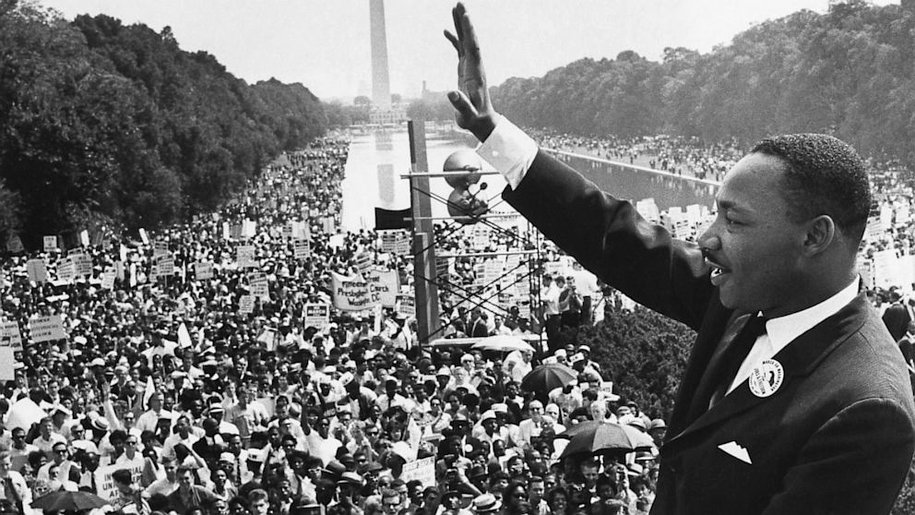

Martin Luther King Jr.
A man that dared to dream

Martin Luther King addresses a crowd outside of Captiol Hill
Foreword:
Martin Luther King Jr. (born Michael King Jr.; January 15, 1929 – April 4, 1968) was an American Baptist minister and activist who became the most visible spokesperson and leader in the Civil Rights Movement from 1955 until his assassination in 1968. King is best known for advancing civil rights through nonviolence and civil disobedience, inspired by his Christian beliefs and the nonviolent activism of Mahatma Gandhi. He was the son of early civil rights activist Martin Luther King, Sr..
An Abridged Timeline of His Life:
- 1929 - Jan. 15: Michael King is born in Atlanta. His father changes the boy’s name, as well as his own, to Martin Luther King several years later.
- 1944 - Sept. 20: King enrolls at Morehouse College after passing the entrance exam at age 15.
- 1946 - Aug. 6: The Atlanta Constitution publishes a letter to the editor from King supporting minority rights.
- 1948 - Feb. 25: King is ordained and becomes assistant pastor at Ebenezer Baptist Church in Atlanta, his father’s church.
- 1948 - June. 8: King graduates from Morehouse College with bachelor’s degree in sociology.
- 1948 - Sep. 14: King enters Crozer Theological Seminary in Chester, Pa.
- 1951 - May 8: King graduates from Crozer with bachelor of divinity degree. He delivers valedictory address.
- 1951 - Sep 13: King begins graduate studies in systematic theology at Boston University’s School of Theology.
- 1952 - January: King meets Coretta Scott in Boston.
- 1953 - June 18: King and Coretta Scott are married near Marion, Ala. King’s father officiates at the service.
- 1954 - Sep 1: King begins his pastorate at Dexter Avenue Baptist Church in Montgomery, Ala.
- 1955 - June 5: King earns doctorate from Boston University.
- 1955 - Dec 5: King is named president of the Montgomery Improvement Association.
- 1956 - Jan 30: King’s home is bombed while he is speaking at a meeting. His wife and daughter are unharmed.
- 1957 - Jan 10: King is named chairman of what becomes the Southern Christian Leadership Conference (SCLC).
- 1957 - Feb 18: King appears on the cover of Time magazine.
- 1957 - May 17: King delivers his first national address, “Give Us the Ballot,” at the Prayer Pilgrimage for Freedom at the Lincoln Memorial in Washington.
- 1958 - June 23: King and other civil rights leaders meet with President Dwight Eisenhower in Washington.
- 1958 - Sep 20: At a book signing in Harlem, King is stabbed with a letter opener by a mentally ill woman. Doctors remove the seven-inch blade from his chest.
- 1960 - Feb. 1: King moves from Montgomery to Atlanta to focus on the civil rights struggle
- 1960 - Oct. 19: King is arrested at a sit-in demonstration at an Atlanta department store. He is sentenced to four months of hard labor — for violating a suspended sentence in a 1956 traffic violation. He is released on $2,000 bond.
- 1961 - Dec 16: King and hundreds of others are arrested in desegregation campaign in Albany, Ga.
- 1962 - July 27: King is arrested at a prayer vigil in Albany and spends two weeks in jail. He leaves Aug. 10.
- 1962 - Sep 28: A member of the American Nazi Party hits King in the face twice at an SCLC conference in Birmingham.
- 1963 - April 16:After being arrested for ignoring an Alabama state court injunction against demonstrations, King writes his famous Letter from a Birmingham Jail, a defense of nonviolent resistance to racism.
- 1963 - Aug 28: King delivers his “I Have a Dream” speech at the Lincoln Memorial as more than 200,000 demonstrators take part in the March on Washington for Jobs and Freedom.
- 1963 - Sep 15: Four girls are killed when a bomb explodes at the 16th Street Baptist Church in Birmingham.
- 1963 - Sep 18: King delivers eulogy for three of the slain girls.
- 1964 - Jan 3: Time magazine names King “Man of the Year” for 1963.
- 1964 - June 11: King and 17 others are jailed for trespassing after demanding service at a whites-only restaurant in St. Augustine, Fla.
- 1964 - Dec 10: King wins Nobel Peace Prize.
- 1965 - March 17-25: After voting rights marchers are attacked and beaten by police in Selma, Ala., King peacefully leads civil rights marchers from Selma to Montgomery.
- 1965 - Aug 11: Rioting in the Watts section of Los Angeles leads King to address economic inequality.
- 1965 - Aug 12: King gives his first speech against the Vietnam War.
- 1966 - Jan 26:King and his wife move into a Chicago slum apartment to demand better housing and education in northern U.S. cities.
- 1967 - April 4:In speech at a New York City church, King demands U.S. make greater effort to end Vietnam War.
- 1967 - Dec 4: King unveils plans for a Poor People’s Campaign, a mass civil disobedience protest, for the spring in Washington. It was intended as an expansion of his civil rights activities into the area of economic rights.
- 1968 - March 23: King leads 6,000 protesters in support of striking sanitation workers in Memphis. The march ends with violence and looting.
- 1968 - April 3: King returns to Memphis, intending to lead a peaceful march. At an evening rally, he delivers his final speech, “I’ve Been to the Mountaintop.”
- 1968 - April 4: King is shot and killed on the balcony of the Lorraine Motel.
- 1968 - April 9: King is buried in Atlanta.
If you have more time to read about the man that influenced a generation to strive for equality, you can click here to read his Wikipedia article.